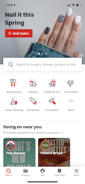
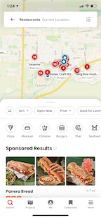

Yelp, one of the most well-known finding food options apps. Users search by city or specific location, and filter results by price, type of cuisine, or rating. Yelp includes user-uploaded photos of restaurant food. I also like the interactive map where users can select the red marks on the map and look at the places in detail. Yelp uses a consistent color theme in its interface that matches with its logo.
 TimeOut is a restaurant suggestion website that is tailored to your specific interests and preferences. Visitors can select different cities to explore in the dropdown menu. When I looked at the website, it was more like a food blog website that recommended restaurants and places to eat for foodies and travelers. The images enlarge when I hover on them.